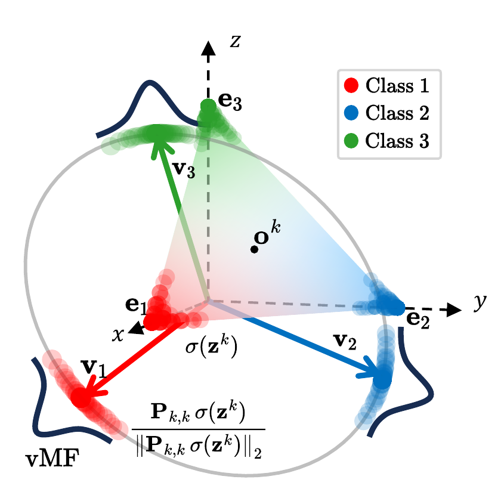
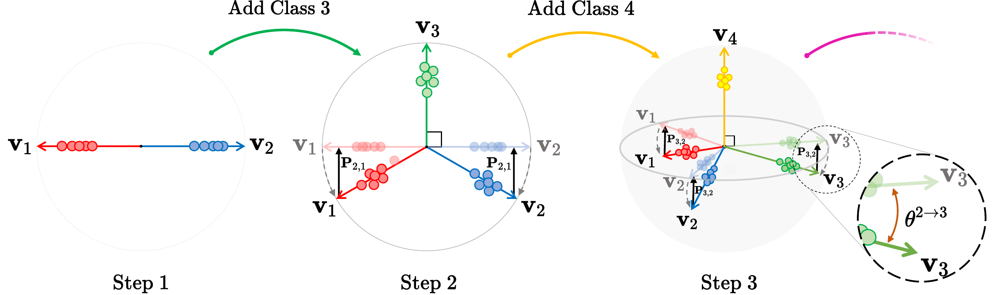

Softmax outputs and logits of independently trained models share a simplex geometry fixed by the label space. We turn it into backward-compatible features, with no compatibility training.
TL;DR Softmax cross-entropy with one-hot labels drives every model toward the same simplex, fixed by the label space. We center and normalize the softmax outputs (PSP) or normalize the logits (LSP), and correct for new classes with a fixed linear map. We prove that the backward-compatibility inequalities then hold in expectation on the hypersphere. Independently trained models become compatible without compatibility losses, learned mappings or architecture changes.
Training modern AI models has become increasingly expensive, and updating deployed models can alter their internal feature representations, affecting applications built upon them. In retrieval systems, such updates often require a complete gallery re-indexing, which is computationally expensive at scale. Existing backward-compatibility methods enable direct comparison between representations produced by updated and earlier models, avoiding re-indexing. However, they typically require compatibility-specific training, learned mapping functions, or modifications to the model architecture, and often depend explicitly on the previous model. In this paper, we propose hyperspherical simplex representations derived from softmax outputs and logits for backward-compatible retrieval across independently trained models. These representations leverage the simplex structure induced by softmax cross-entropy training with one-hot labels, which provides a common geometric reference across model updates. Since this reference depends on the number of classes, introducing new ones during an update expands the simplex, thereby misaligning the prototypes of existing classes with their earlier counterparts. We therefore derive a deterministic linear transformation to restore their alignment. We further provide a theoretical analysis of the formal backward-compatibility definition, identifying two geometric conditions under which its inequalities hold in expectation, assuming von Mises–Fisher class distributions whose concentration increases across updates. Aligned regular-simplex representations satisfy these conditions, providing a theoretical basis for the proposed representations under the stated assumptions. Without using additional compatibility-specific losses, learned mappings, or modifications to the model architecture, the proposed representations achieve competitive results on standard compatibility benchmarks, including scenarios with expanded class sets, more expressive architectures, and independently trained models from public repositories.
A retrieval gallery is encoded once with the deployed model \(\phi^k\). When the model is updated to \(\phi^t\), new query features must be compared with the stored gallery features. Independently trained models do not share a feature space, so the comparison fails unless the whole gallery is re-encoded.
New-to-old comparisons must group same-class items, and separate different classes, at least as well as old-to-old comparisons. Empirically, this is checked with the criterion \(M(\phi^t,\phi^k)>M(\phi^k,\phi^k)\) on a retrieval metric \(M\).
Most methods obtain compatibility by training the new model against the old one (e.g., BCT), by learning mappings between feature spaces, or by sharing a pre-allocated fixed classifier across updates. We need none of these: the reference is already provided by the label space.
Map softmax outputs from the probability simplex onto a regular simplex centered at the origin with \(\mathbf P_{k,k}=\mathbf I-\tfrac1{C^k}\mathbf J\). Logits are already centered and aligned with the same prototypes.
Project onto the unit hypersphere. Class prototypes \(\mathbf v_c=\mathbf e_c-\mathbf o\) are fixed by the one-hot coordinates, so they are the same for every model trained on the same classes.
If the update adds classes, apply \(\mathbf P_{t,k}=[\,\mathbf P_{k,k}\mid\mathbf 0\,]\) to new queries. It is deterministic and data-free, and restores the alignment of the old-class prototypes.
Cross-entropy with one-hot labels drives softmax outputs to the vertices \(\mathbf e_c\) of the probability simplex \(\Delta^{C-1}\). These vertices depend only on the label space, not on the model. The simplex, however, lies in the non-negative orthant, so normalized softmax outputs of different classes are at most \(\pi/2\) apart.
Centering moves the simplex to the origin. The prototypes \(\mathbf v^k_c=\mathbf e_c-\mathbf o^k\) form a regular simplex with pairwise angle \(\arccos\!\big(-\tfrac1{C-1}\big)>\pi/2\). Under a logit unconstrained-features model, logits align with the same directions (Prop. 3.3), which gives LSP.

Adding classes moves the simplex center, so every existing prototype rotates by the same angle (Eq. 6), and the prototypes of the new classes are orthogonal to the old ones (Prop. 3.4). The correction \(\mathbf P_{t,k}\) centers the old-class coordinates and drops the new ones, which maps each updated prototype back onto its step-\(k\) counterpart (Prop. 3.5).

We model features on the unit hypersphere and derive closed-form expected cosine distances. Two geometric conditions then make both inequalities of Definition 3.1 hold in expectation.
The proof rests on Lemma G.1. For independent \(\mathbf X_1\sim\mathrm{vMF}(\boldsymbol\mu_1,\kappa_1)\) and \(\mathbf X_2\sim\mathrm{vMF}(\boldsymbol\mu_2,\kappa_2)\),
where \(m_d(\kappa)\) is the mean resultant length, \(\mathbb E[\mathbf X]=m_d(\kappa)\,\boldsymbol\mu\), which increases with \(\kappa\). A more concentrated new model multiplies \(\boldsymbol\mu_1^\top\boldsymbol\mu_2\) by a larger factor. This brings aligned same-class pairs closer, but pushes different-class pairs apart only when \(\boldsymbol\mu_1^\top\boldsymbol\mu_2<0\).
Two classes on the hypersphere. Old features (\(\phi^k\)) follow \(\mathrm{vMF}(\boldsymbol\mu_c,\kappa^k)\) and new ones (\(\phi^t\)) follow \(\mathrm{vMF}(\boldsymbol\mu_c,\kappa^t)\). The bars are the exact expected cosine distances from Lemma G.1. Break one condition and watch the corresponding inequality fail.
Dashed arrows: \(\mathbb E[\mathbf X]\) for the old model. Solid arrows: the new model. Red: class 1, blue: class 2.
\(\delta\) rotates the new prototype of class 1 away from class 2, so only (1a) is affected. Presets use the regular-simplex angle \(\arccos(-1/(C-1))\) and the misalignment of Eq. 6. Margins are defined as in Appendix I: old→old minus new→old distance for (1a), and the reverse for (1b).
On CIFAR-10 (ResNet-18, 5 → 10 classes, 9 independently trained model pairs), removing either operation of PSP breaks the inequality that the theorem predicts.
| Representation | \(\mathbf P_{k,k}\) | \(\mathbf P_{t,k}\) | margin (1a) | margin (1b) | both hold |
|---|---|---|---|---|---|
| Softmax | – | – | −11.1 ± 3.0 | −5.5 ± 0.9 | 0 / 9 |
| PSP without \(\mathbf P_{t,k}\) | ✓ | – | −56.8 ± 3.3 | −14.2 ± 0.8 | 0 / 9 |
| PSP without \(\mathbf P_{k,k}\) | – | ✓* | +12.0 ± 1.9 | −13.3 ± 1.0 | 0 / 9 |
| PSP | ✓ | ✓ | +15.5 ± 2.5 | +3.9 ± 0.6 | 9 / 9 |
Average margins of (1a) and (1b), ×10⁻³, mean ± std over 9 pairs. Positive values mean the inequality holds in expectation. *\(\mathbf P_{t,k}\) with \(\mathbf P_{k,k}\) replaced by the identity. The measured misalignment without correction is 18.8°–20.0°, against the 19.5° predicted by Eq. 6.
We evaluate on the standard compatibility benchmarks (extended classes, extended backbone, and both), and between independently pretrained public models. Compatibility across \(T\) updates is summarized by AC, the fraction of update pairs that satisfy the empirical criterion, and ACA, which averages the cross-model accuracy over compatible pairs only.
Five torchvision models pretrained on ImageNet-1K, of increasing capacity. They share nothing but the label space. Each entry is CMC@1 on ImageNet-1K, with queries from the row model and the gallery from the column model. Red entries fail the empirical criterion.
| Method | 2 steps | 5 steps | 20 steps | 50 steps | ||||||||
|---|---|---|---|---|---|---|---|---|---|---|---|---|
| AC | AA | ACA | AC | AA | ACA | AC | AA | ACA | AC | AA | ACA | |
| Baseline | 0 | 29.63 | 0 | 0 | 13.60 | 0 | 0 | 4.22 | 0 | 0 | 2.29 | 0 |
| BCT | 1 | 40.64 | 35.51 | 0 | 31.03 | 0 | 0 | 22.66 | 0 | 0.01 | 15.78 | 0.84 |
| RACT | 1 | 44.19 | 45.09 | 0.60 | 30.43 | 16.53 | 0.05 | 21.61 | 2.42 | 0 | 16.71 | 0 |
| AdvBCT | 0 | 35.32 | 0 | 0.40 | 26.13 | 11.67 | 0.02 | 19.79 | 0.19 | 0 | 14.70 | 0.03 |
| LCE | 1 | 43.48 | 40.71 | 0.10 | 32.63 | 4.63 | 0 | 20.95 | 0.25 | 0 | 13.81 | 0.03 |
| CoReS | 1 | 40.94 | 35.21 | 0 | 29.63 | 0 | 0.12 | 24.88 | 4.61 | 0.11 | 23.50 | 3.91 |
| PSP | 1 | 36.31 | 29.05 | 0.90 | 26.04 | 21.76 | 0.52 | 20.56 | 12.99 | 0.39 | 19.42 | 10.76 |
| LSP | 1 | 41.14 | 36.38 | 0.70 | 30.36 | 21.91 | 0.44 | 24.11 | 13.26 | 0.36 | 22.68 | 11.25 |
From Table 1. Dark and light blue mark the highest and second-highest value of each metric. ImageNet-1K and Google Landmarks v2 (Table 2), extended-backbone and combined benchmarks (Table 4), and Places365 and ViT sequences (Table 5) are in the paper.
The code will be released in the repository github.com/miccunifi/PSP.
@article{ricci2026hyperspherical,
title = {Hyperspherical Simplex Representations for Backward-Compatible Retrieval},
author = {Ricci, Simone and Biondi, Niccol{\`o} and Pernici, Federico and Del Bimbo, Alberto},
journal = {arXiv preprint arXiv:2610.29550},
year = {2026}
}